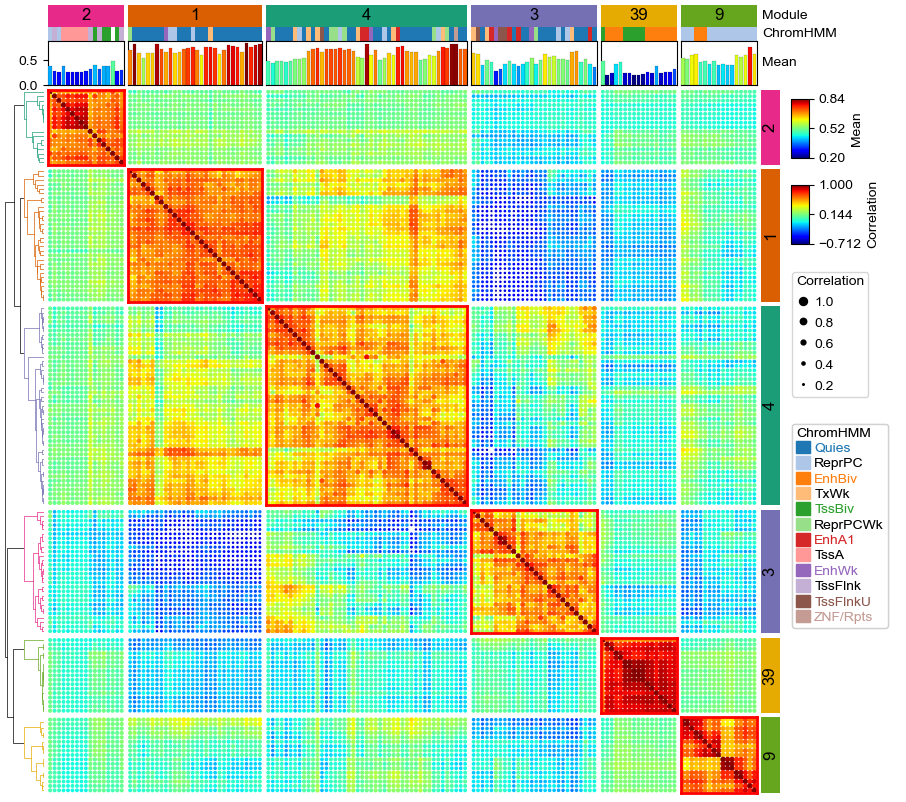
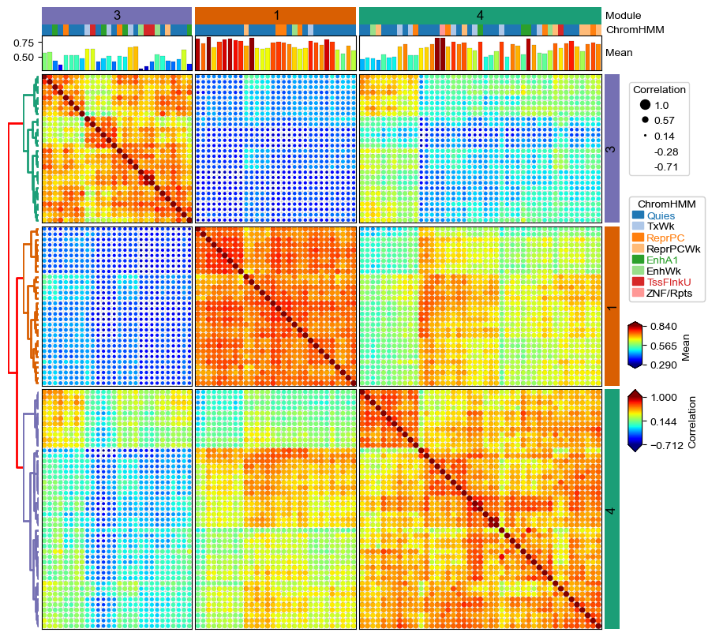

Plot correlation matrix for CpG modules using DotClustermap¶
Processing the data¶
[1]:
import os,sys
%matplotlib inline
import matplotlib
import matplotlib.pylab as plt
plt.rcParams['font.family']='sans serif'
plt.rcParams['font.sans-serif']='Arial'
plt.rcParams['pdf.fonttype']=42
sys.path.append(os.path.expanduser("~/Projects/Github/PyComplexHeatmap/"))
import PyComplexHeatmap as pch
print(pch.__version__)
from matplotlib.colors import LinearSegmentedColormap
1.7.2.dev0+g8abf70a.d20240415
[2]:
df_corr = pd.read_csv("../data/kycg_modules_correlations.csv",sep='\t',index_col=0)
df_ann = pd.read_csv("../data/kycg_modules_annotations.csv",sep='\t')
betas = pd.read_csv("../data/kycg_modules_betas.csv",sep='\t')
cpg_std=betas.std().to_dict()
cpg_mean=betas.mean().to_dict()
df_ann.set_index('CpG',inplace=True)
df_ann.Module=df_ann.Module.astype(str)
[3]:
df_ann.Module.value_counts().head(10)
[3]:
4 45
1 30
3 28
9 17
2 17
39 17
37 16
45 13
33 13
6 12
Name: Module, dtype: int64
[4]:
df_ann.loc[df_ann.Module.isin(['4','1','3','9','2','39','37'])].HM.unique()
[4]:
array(['H3K4me1;H3K79me2;H3K79me3', 'H3F3A;H4K20me1', nan,
'H2BK20ac;H3K4me1', 'H3F3A;H3K23me2', 'H2BK20ac', 'H2AFY', 'H3F3A',
'H4K20me1', 'H2AK9ac;H2BK12ac;H2BK15ac;H2BK20ac;H3K9me1',
'H3K9me1', 'H3K23me2', 'H2BK120ub', 'H2BK12ac', 'H2AZac;H3K79me1',
'H2A;H2AZac;H3_4ac;H3K27me1;H3K4me3B;H3K56ac;H3K79me1;H3K9ac_H3K14ac;H3K9K14ac',
'CENPA;H1.0;H1.4;H2A;H2AFZ;H2AK119;H2AK9ac;H2AZac;H3.3;H3.3,H2A.Z;H3ac;H3K27ac;H3K27me1;H3K4me3;H3K4me3B;H3K79me1;H3K9ac;H3K9ac_H3K14ac;H3K9K14ac;H4;H4ac;H4K5ac;H4K5ac_H4K8ac_H4K12ac_H4K16ac;H4K8ac;HistoneLysineAcetylation;HistoneLysineCrotonylation',
'H1.0',
'H3K18cr;H4K16ac;HistoneLysineAcetylation;HistoneLysineCrotonylation',
'H4K12ac', 'H1.4', 'H4K5ac_H4K8ac_H4K12ac_H4K16ac',
'H1.4;H3K79me1;H4ac;H4K12ac;H4K5ac_H4K8ac_H4K12ac_H4K16ac',
'H3K23me2;H3K27me3B', 'H4', 'H1.4;H3K79me1',
'H2AZac;H3;H3K4me3;H3K4me3B;H3K79me1;H4K5ac;H4K5ac_H4K8ac_H4K12ac_H4K16ac',
'H2AK9ac;H3K79me1;H3K9me1', 'H2Bub',
'H2AK5ac;H2AK9ac;H3K79me1;H4K20me1', 'CENPA', 'H3.3;H3F3A',
'H2AK9ac;H2BK12ac;H2BK15ac;H2BK20ac;H3F3A;H3K4me1', 'H3K36me3B',
'H2BK12ac;H3K79me1;H3K9me1;H4', 'H1.0;H1.4;H2BK15ac',
'H2AK5ac;H2AK9ac;H2BK120ac;H2BK12ac;H2BK15ac;H2BK20ac;H3;H3F3A;H3K27me3B;H3K36ac;H3K4me1;H4K91ac',
'H2AK5ac;H2AK9ac;H2BK120ac;H2BK15ac;H2BK20ac', 'H3K27me1',
'H2AK119', 'H2AK9ac;H2BK12ac;H3K79me1;HistoneLysineCrotonylation',
'H3K79me1;H4K20me3', 'H3K27me1;H4K5ac_H4K8ac_H4K12ac_H4K16ac',
'H1.0;H1.4;HistoneLysineCrotonylation',
'H1.0;H1.4;H3K27me1;H3K27me3B', 'H1.4;H3F3A;H3K27me3B', 'H3.3',
'H2AK5ac;H2BK12ac;H2BK15ac;H3K27me1;H3K79me1;HistoneLysineAcetylation',
'H2AK5ac;H2BK12ac;HistoneLysineCrotonylation', 'H1.0;H2AK119',
'H2AFY;H3K36me3B', 'HistoneLysineCrotonylation',
'H3K36me3B;HistoneLysineCrotonylation', 'H2AFY2', 'H3K79me3',
'H3K36me2;HistoneLysineAcetylation;HistoneLysineCrotonylation',
'H2AK5ac;H3K36me3B;HistoneLysineAcetylation;HistoneLysineCrotonylation',
'H2AK119;H3K27me3;H3K27me3B',
'H2AK119;H2AK119ub;H3K27me3;H3K27me3B',
'H2AK119;H2AK119ub;H3K27me3', 'H2AK119;H3K23me2;H3K27me3',
'H2AK119;H2AK119ub;H3K23me2;H3K27me3'], dtype=object)
[5]:
df_corr.head()
[5]:
| cg04735237 | cg00643814 | cg24865495 | cg25376651 | cg27485084 | cg12609052 | cg07354679 | cg02592525 | cg12747056 | cg17718960 | ... | cg19987665 | cg18406033 | cg09678971 | cg00461612 | cg18689454 | cg11923631 | cg27251412 | cg08089567 | cg16717549 | cg09510531 | |
|---|---|---|---|---|---|---|---|---|---|---|---|---|---|---|---|---|---|---|---|---|---|
| cg04735237 | 1.000000 | 0.559916 | 0.686845 | 0.561415 | 0.699960 | 0.711086 | 0.563690 | 0.527953 | 0.621757 | 0.623319 | ... | 0.048462 | 0.103904 | -0.002533 | 0.074093 | -0.114526 | -0.151763 | -0.140823 | -0.117356 | -0.100510 | -0.126291 |
| cg00643814 | 0.559916 | 1.000000 | 0.538034 | 0.568960 | 0.687787 | 0.593650 | 0.676068 | 0.606604 | 0.589549 | 0.747987 | ... | -0.185989 | -0.087952 | -0.242909 | -0.065101 | -0.054958 | -0.096098 | -0.089246 | -0.078234 | -0.025965 | -0.069120 |
| cg24865495 | 0.686845 | 0.538034 | 1.000000 | 0.614696 | 0.646452 | 0.786480 | 0.602911 | 0.519926 | 0.642344 | 0.642081 | ... | 0.022499 | 0.108524 | -0.015151 | 0.028957 | -0.274560 | -0.302464 | -0.284823 | -0.265835 | -0.262931 | -0.268134 |
| cg25376651 | 0.561415 | 0.568960 | 0.614696 | 1.000000 | 0.564983 | 0.727579 | 0.624186 | 0.416198 | 0.505130 | 0.596338 | ... | -0.030346 | 0.122412 | -0.063630 | -0.007048 | -0.197339 | -0.226034 | -0.218230 | -0.180297 | -0.181867 | -0.204431 |
| cg27485084 | 0.699960 | 0.687787 | 0.646452 | 0.564983 | 1.000000 | 0.655515 | 0.599935 | 0.590981 | 0.627786 | 0.674095 | ... | -0.020895 | 0.058742 | -0.078318 | 0.055019 | -0.139691 | -0.168351 | -0.160081 | -0.142216 | -0.114554 | -0.144024 |
5 rows × 512 columns
[6]:
df_ann.head()
[6]:
| Module | ChromHMM | ChromHMM_bioc | HM | TFBS | genes | |
|---|---|---|---|---|---|---|
| CpG | ||||||
| cg04735237 | 1 | TxWk | TxWk | H3K4me1;H3K79me2;H3K79me3 | HDGF;RBFOX2;SREBF1 | PQBP1 |
| cg00643814 | 1 | Quies | Quies | H3F3A;H4K20me1 | ASCL1;CASZ1;EBF1;FEZF1;FOXM1;HAND2;HDAC3;IRF2B... | NaN |
| cg24865495 | 1 | Quies | Quies | NaN | CRX;DNMT3B;OTX2;RORB;ZMYND11;ZNF711 | MACROD1 |
| cg25376651 | 1 | Quies | Quies | H2BK20ac;H3K4me1 | ATF2;BATF;ETV6;FOS;IKZF2;IRF4;JUNB;MAF;MAFG;ME... | FRY |
| cg27485084 | 1 | Quies | Quies | H3F3A;H3K23me2 | PDX1 | NaN |
[7]:
df_ann=df_ann.loc[df_ann.Module.isin(['4','1','3','9','2','39'])]
keep_cpgs=df_ann.index.tolist()
df_corr=df_corr.loc[keep_cpgs,keep_cpgs]
df_ann['Std']=df_ann.index.to_series().map(cpg_std)
df_ann['Mean']=df_ann.index.to_series().map(cpg_mean)
data=df_corr.stack().reset_index()
data.columns=['X','Y','Correlation']
data['Module']=data.X.map(df_ann.Module.to_dict())
data['ChromHMM']=data.X.map(df_ann.ChromHMM.to_dict())
keep_hm=['H3K4me1','H3K4me3','H3K27me1','H3K27me3','H3K27me3B']
for hm in keep_hm:
df_ann[hm]=df_ann.HM.fillna('').apply(lambda x:1 if hm in x.split(';') else 0)
data[hm]=data.X.map(df_ann[hm].to_dict())
[8]:
print(df_ann.shape)
df_ann.head()
(154, 13)
[8]:
| Module | ChromHMM | ChromHMM_bioc | HM | TFBS | genes | Std | Mean | H3K4me1 | H3K4me3 | H3K27me1 | H3K27me3 | H3K27me3B | |
|---|---|---|---|---|---|---|---|---|---|---|---|---|---|
| CpG | |||||||||||||
| cg04735237 | 1 | TxWk | TxWk | H3K4me1;H3K79me2;H3K79me3 | HDGF;RBFOX2;SREBF1 | PQBP1 | 0.245870 | 0.768918 | 1 | 0 | 0 | 0 | 0 |
| cg00643814 | 1 | Quies | Quies | H3F3A;H4K20me1 | ASCL1;CASZ1;EBF1;FEZF1;FOXM1;HAND2;HDAC3;IRF2B... | NaN | 0.319166 | 0.635635 | 0 | 0 | 0 | 0 | 0 |
| cg24865495 | 1 | Quies | Quies | NaN | CRX;DNMT3B;OTX2;RORB;ZMYND11;ZNF711 | MACROD1 | 0.270459 | 0.835897 | 0 | 0 | 0 | 0 | 0 |
| cg25376651 | 1 | Quies | Quies | H2BK20ac;H3K4me1 | ATF2;BATF;ETV6;FOS;IKZF2;IRF4;JUNB;MAF;MAFG;ME... | FRY | 0.276320 | 0.618949 | 1 | 0 | 0 | 0 | 0 |
| cg27485084 | 1 | Quies | Quies | H3F3A;H3K23me2 | PDX1 | NaN | 0.276748 | 0.700196 | 0 | 0 | 0 | 0 | 0 |
[9]:
print(data.shape)
data.head()
(23716, 10)
[9]:
| X | Y | Correlation | Module | ChromHMM | H3K4me1 | H3K4me3 | H3K27me1 | H3K27me3 | H3K27me3B | |
|---|---|---|---|---|---|---|---|---|---|---|
| 0 | cg04735237 | cg04735237 | 1.000000 | 1 | TxWk | 1 | 0 | 0 | 0 | 0 |
| 1 | cg04735237 | cg00643814 | 0.559916 | 1 | TxWk | 1 | 0 | 0 | 0 | 0 |
| 2 | cg04735237 | cg24865495 | 0.686845 | 1 | TxWk | 1 | 0 | 0 | 0 | 0 |
| 3 | cg04735237 | cg25376651 | 0.561415 | 1 | TxWk | 1 | 0 | 0 | 0 | 0 |
| 4 | cg04735237 | cg27485084 | 0.699960 | 1 | TxWk | 1 | 0 | 0 | 0 | 0 |
Plotting the Dot clustermap¶
[10]:
row_ha = pch.HeatmapAnnotation(
Module=pch.anno_simple(df_ann.Module,cmap='Dark2',legend=False,height=5,
add_text=True,text_kws={'color':'black','fontsize':12}),
axis=0,verbose=0,label_kws={'visible':False})
all_cmaps=matplotlib.pyplot.colormaps()
if 'binarize' not in all_cmaps:
c = LinearSegmentedColormap.from_list('binarize', [(0, 'lightgray'), (1, 'black')])
try:
plt.register_cmap(cmap=c)
except:
matplotlib.colormaps.register(c, force=True)
col_ha = pch.HeatmapAnnotation(
#label=pch.anno_label(df_col.ColGroup, merge=True,rotation=45),
Module=pch.anno_simple(df_ann.Module,cmap='Dark2',legend=False,height=5,
add_text=True,text_kws={'color':'black','fontsize':12}),
ChromHMM=pch.anno_simple(df_ann.ChromHMM,cmap='tab20'),
Mean=pch.anno_barplot(df_ann.Mean,cmap='jet',linewidth=0.1),
# H3K4me1=pch.anno_simple(df_ann.H3K4me1,cmap='binarize',legend=False),
# H3K4me3=pch.anno_simple(df_ann.H3K4me3,cmap='binarize',legend=False),
# H3K27me1=pch.anno_simple(df_ann.H3K27me1,cmap='binarize',legend=False),
# H3K27me3=pch.anno_simple(df_ann.H3K27me3,cmap='binarize',legend=False),
# H3K27me3B=pch.anno_simple(df_ann.H3K27me3B,cmap='binarize',legend=False),
verbose=0,label_side='right',label_kws={'horizontalalignment':'left'})
plt.figure(figsize=(10, 9))
cm = pch.DotClustermapPlotter(
data=data, x='X',y='Y',value='Correlation',c='Correlation',s='Correlation',
hue='Module', cmap='jet',#cmap={'High':'Reds','Middle':'Purples','Low':'Greens'},
#colors={'High':'red','Middle':'purple','Low':'green'},
#marker={'4':'P','1':'*','3':'D'},
top_annotation=col_ha,right_annotation=row_ha,
col_split=df_ann.Module,row_split=df_ann.Module, col_split_gap=1,row_split_gap=1,
row_dendrogram=True,legend_anchor="ax_heatmap",legend_hpad=7,legend_vpad=5,
tree_kws=dict(row_cmap='Dark2'),verbose=0,legend_gap=7,alpha=2,spines=False)
# plot custom spines
for i in range(cm.heatmap_axes.shape[0]):
for j in range(cm.heatmap_axes.shape[1]):
if i != j:
continue
ax = cm.heatmap_axes[i][j]
for side in ["top", "right", "left", "bottom"]:
ax.spines[side].set_visible(True)
ax.spines[side].set_color('red')
ax.spines[side].set_linewidth(2)
plt.savefig("dotClustermap.pdf", bbox_inches='tight')
plt.show()
/var/folders/3q/hwjjddlj65b030m69cfbdj4h0000gq/T/ipykernel_80469/4067995882.py:10: MatplotlibDeprecationWarning: The register_cmap function was deprecated in Matplotlib 3.7 and will be removed two minor releases later. Use ``matplotlib.colormaps.register(name)`` instead.
plt.register_cmap(cmap=c)

A smaller dot clustermap¶
Another example dot clustermap with a smaller set of cpgs and add spines to the heatmap using parameter spines=True.
[12]:
df_ann=df_ann.loc[df_ann.Module.isin(['4','1','3'])]
keep_cpgs=df_ann.index.tolist()
df_corr=df_corr.loc[keep_cpgs,keep_cpgs]
data=df_corr.stack().reset_index()
data.columns=['X','Y','Correlation']
data['Module']=data.X.map(df_ann.Module.to_dict())
data['ChromHMM']=data.X.map(df_ann.ChromHMM.to_dict())
keep_hm=['H3K4me1','H3K4me3','H3K27me1','H3K27me3B']
for hm in keep_hm:
df_ann[hm]=df_ann.HM.fillna('').apply(lambda x:1 if hm in x.split(';') else 0)
data[hm]=data.X.map(df_ann[hm].to_dict())
[13]:
row_ha = pch.HeatmapAnnotation(
Module=pch.anno_simple(df_ann.Module,cmap='Dark2',legend=False,height=5,
add_text=True,text_kws={'color':'black','fontsize':12}),
axis=0,verbose=0,label_kws={'visible':False})
all_cmaps=matplotlib.pyplot.colormaps()
if 'binarize' not in all_cmaps:
c = LinearSegmentedColormap.from_list('binarize', [(0, 'lightgray'), (1, 'black')])
try:
plt.register_cmap(cmap=c)
except:
matplotlib.colormaps.register(c, force=True)
col_ha = pch.HeatmapAnnotation(
#label=pch.anno_label(df_col.ColGroup, merge=True,rotation=45),
Module=pch.anno_simple(df_ann.Module,cmap='Dark2',legend=False,height=5,
add_text=True,text_kws={'color':'black','fontsize':12}),
ChromHMM=pch.anno_simple(df_ann.ChromHMM,cmap='tab20'),
Mean=pch.anno_barplot(df_ann.Mean,cmap='jet',linewidth=0.1),
# H3K27me3=pch.anno_simple(df_ann.H3K27me3,cmap='binarize',legend=False),
# H3K27me3B=pch.anno_simple(df_ann.H3K27me3B,cmap='binarize',legend=False),
verbose=0,label_side='right',label_kws={'horizontalalignment':'left'})
plt.figure(figsize=(10, 9))
cm = pch.DotClustermapPlotter(
data=data, x='X',y='Y',value='Correlation',c='Correlation',s='Correlation',
hue='Module', cmap='jet',#cmap={'High':'Reds','Middle':'Purples','Low':'Greens'},
#colors={'High':'red','Middle':'purple','Low':'green'},
#marker={'4':'P','1':'*','3':'D'},
top_annotation=col_ha,right_annotation=row_ha,
col_split=df_ann.Module,row_split=df_ann.Module, col_split_gap=1,row_split_gap=1,
row_dendrogram=True,legend_anchor="ax_heatmap",legend_hpad=7,legend_vpad=5,
tree_kws=dict(row_cmap='Dark2',colors='red',linewidth=2),verbose=0,legend_gap=7,alpha=2,spines=True)
plt.savefig("dotClustermap2.pdf", bbox_inches='tight')
plt.show()

[ ]: